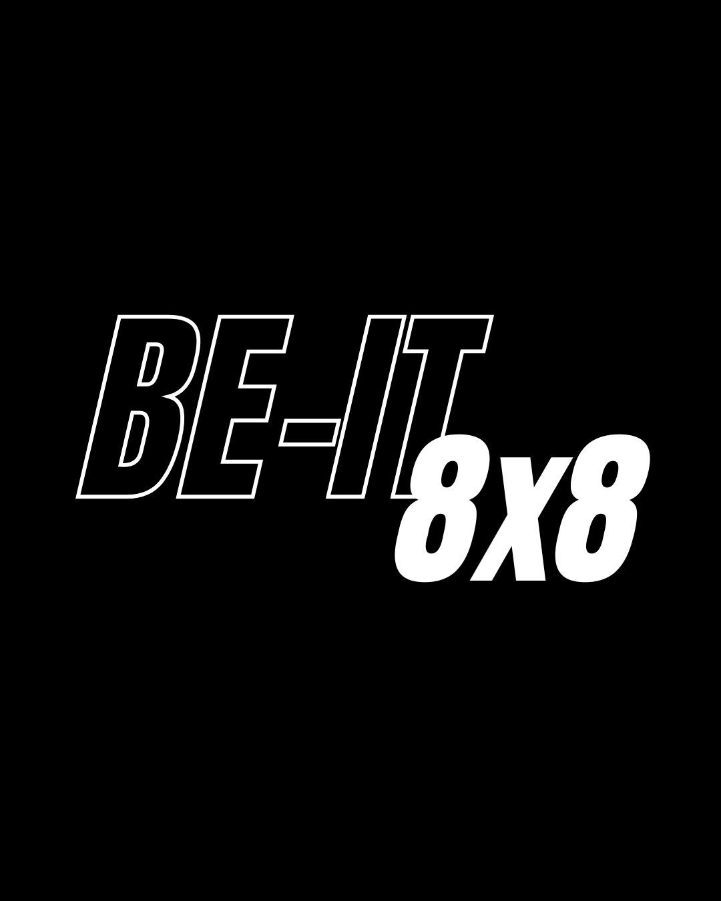

Before you do anything else, read this page. It takes three minutes and it'll make the next eight weeks make sense.
We've stayed out of the challenge game for years, because most challenges sell you a before and after and hand you straight back to your old habits the day they finish.
This isn't that.
For eight weeks you're going to hold eight habits — and at the end of it you won't just look different, you'll have become someone who does these things. That's the part that lasts.
This isn't a chore. It's a choice. Every day you tick those habits off, you're proving something to yourself about who you are. That's the whole point.
Six habits are set for everyone:
Two you choose yourself — picked when you first open the app.
Eight habits. Every day. Fifty-five days.
You tick them off in the app, you earn points, and you'll see where you sit on the leaderboard against everyone else doing it with you — including your coaches, who are doing every single day of this alongside you.
This is the most important thing you'll do in these eight weeks, and it takes two minutes.
When you first open the app, you'll build a four-line statement. Something like:
I am someone who keeps my word.
I prove it by training when I don't feel like it.
I don't negotiate with my own excuses.
This is who I am. Not who I'm trying to be.
You'll read it out loud every morning for 55 days.
Here's why it matters. You can force new habits for a few weeks through willpower alone — everyone can. What makes them stick is believing something different about yourself. The statement is the destination you're setting. Everything else is just you proving it's true.
Don't pick what's comfortable. Pick who you are choosing to become.
We'd rather tell you the hard part now than have you quit in week one.
Days 1–5 are the hardest. If you've been eating a lot of packaged food, expect a headache, some tiredness, and thinking about food more than usual. Your body is adjusting. It passes.
Week 2 — it starts levelling out. The 3pm crash gets smaller.
Week 3 onwards — this is where it clicks. Better sleep, better energy, and the habits stop feeling like decisions.
If week one is rough, you're not doing it wrong. You're doing it. And you won't be doing it alone.
We'll add you to the group chat using the Instagram handle you gave at checkout — nothing else for you to do there. This is where the weekly drops, the coach check-ins and the meals we're all eating get posted.
Judged on consistency, transformation, and how you showed up.